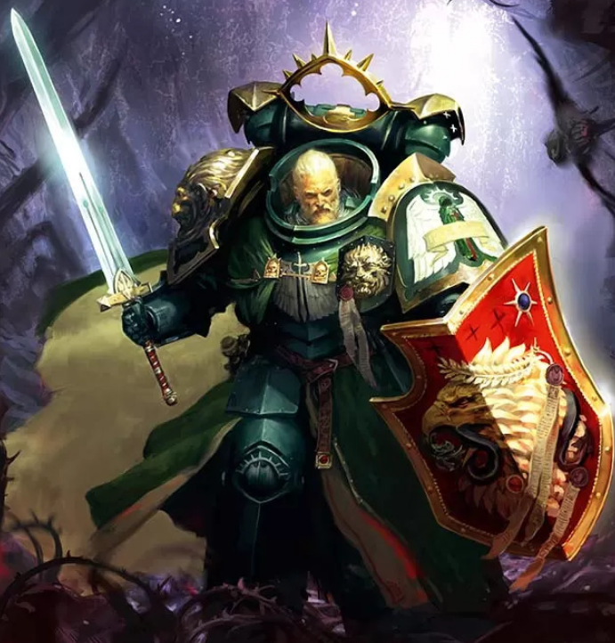

Dossier Primarque 001.M31
Lion El'Jonson fut le Primarque de la Première Légion. Avant les autres fils de l’Empereur, avant les gloires publiques et les chants de victoire, il incarna la guerre silencieuse, froide, méthodique.
Retrouvé sur Caliban, monde de forêts hostiles et de créatures monstrueuses, le Lion grandit seul dans les ténèbres. Il survécut là où un enfant humain aurait disparu en quelques heures.

Lorsqu’il fut découvert par les chevaliers de Caliban, il était déjà devenu une arme. Silencieux, discipliné, presque impossible à lire.
Sous son autorité, les ordres chevaleresques furent unifiés. Caliban fut purgé de ses bêtes. Puis, lorsque l’Empereur arriva, le Lion reçut le commandement des Dark Angels.
Durant la Grande Croisade, il se révéla comme l’un des plus grands stratèges parmi les Primarques. Il ne cherchait pas l’admiration. Il cherchait l’efficacité.
Là où d’autres parlaient, le Lion agissait. Là où d’autres hésitaient, il frappait.
Mais cette froideur nourrissait aussi la distance. Même parmi ses frères, Lion El'Jonson resta difficile à comprendre. Loyal, mais secret. Brillant, mais isolé.
Après l’Hérésie d’Horus, la tragédie de Caliban marqua définitivement son héritage. La rébellion de Luther et la dispersion des Déchus enfermèrent les Dark Angels dans une honte que peu connaissent.
Le Lion disparut après ces événements, laissé entre mythe, silence et archives scellées.
Il faut comprendre ceci. Lion El'Jonson n’était pas seulement un chevalier. Il était le gardien d’une vérité dangereuse.
Et les vérités gardées trop longtemps deviennent parfois des chaînes.
Fin de l’extrait. Toute donnée relative au Primarque Lion El'Jonson demeure sous restriction du Cercle Intérieur.